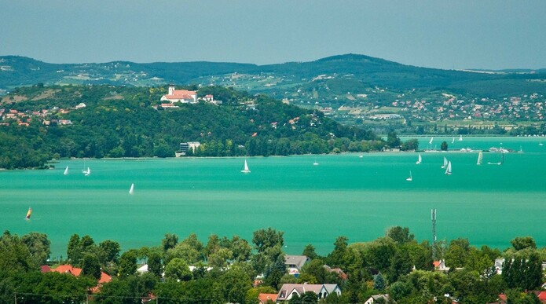
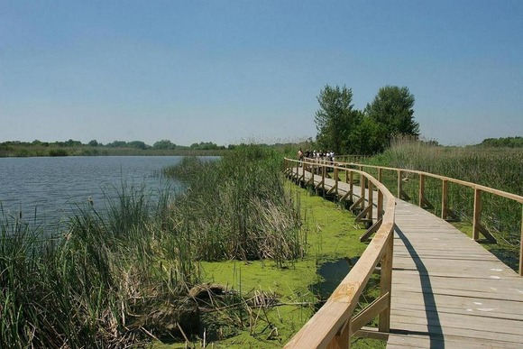
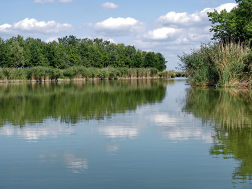

Balaton
A Balaton Közép-Európa legnagyobb édesvizű tava, amely Magyarország nyugati részén található.
Hossza mintegy 77 km, legnagyobb szélessége 14 km, észak-déli irányban. Sekély vize gyorsan melegszik, ezért nyáron különösen kedvelt fürdőhely. A tó északi partja dombos, itt található a híres Badacsony és a borvidékek. A déli part laposabb, családbarát strandjai miatt népszerű. A Balaton nemcsak fürdőzésre, hanem vitorlázásra, horgászásra és kerékpározásra is ideális. Télen, amikor befagy, sokan korcsolyázni járnak ide. Számos kulturális rendezvény és fesztivál is megrendezésre kerül a tó körül, például a Balaton Sound vagy a Művészetek Völgye. A Balaton környéke fejlett turisztikai infrastruktúrával rendelkezik. A tó vize enyhén lúgos, és híres gyógyhatású iszapot is találni a part mentén.A tó különlegessége, hogy egyes részei természetvédelmi oltalom alatt állnak, így azokat csak meghatározott szabályok szerint lehet látogatni. A vízfelületet szigetek, csatornák és holtágak tagolják, ami kalandos felfedezéseket tesz lehetővé. A tó élővilága gazdag, különösen a nádasokban és a kisebb öblökben figyelhetők meg madarak és halak. A balatoni kompjáratok révén gyorsan átkelhetünk egyik partról a másikra.Tisza-tó
A Tisza-tó Magyarország második legnagyobb tava, mesterséges víztározóként jött létre a Tisza szabályozása során.
A tó területe kb. 127 km², és változatos vízrajzi képe miatt különleges ökoszisztémával rendelkezik. A Tisza-tó különösen népszerű a természetkedvelők körében, mert számos madárfaj és vízi élőlény otthona. A tó partján tanösvények, madárlesek és csónakos túralehetőségek várják a látogatókat. Különösen kedvelt célpont a horgászok, kenusok és vízitúrázók körében. A Poroszlón található Ökocentrum bemutatja a tó gazdag élővilágát. Fürdőzésre is alkalmas, és több szabadstrand is működik a partján. A tó körül kiépített kerékpárút húzódik, ami remek lehetőséget nyújt biciklitúrákra. A Tisza-tó vize tiszta, lassan mélyülő, így családoknak is ideális. A természetvédelmi területek miatt fokozottan ügyelnek a környezet megóvására. A tó különlegessége, hogy egyes részei természetvédelmi oltalom alatt állnak, így azokat csak meghatározott szabályok szerint lehet látogatni. A vízfelületet szigetek, csatornák és holtágak tagolják, ami kalandos felfedezéseket tesz lehetővé. A vadregényes vízi világ csónakból vagy kajakból fedezhető fel a legjobban. Tavasszal és ősszel madárvonulás figyelhető meg, amit a természetfotósok különösen értékelnek. A térségben komoly ökoturisztikai fejlesztések zajlottak az elmúlt években. A Tisza-tó a fenntartható turizmus példája Magyarországon.Szelidi-tó
A Szelidi-tó egy természetes eredetű tó Bács-Kiskun vármegyében, Kalocsa közelében.
Kb. 5 km hosszú és 150–200 méter széles, mélysége eléri a 4–5 métert. Vizét gyógyhatásúnak tartják, magas ásványianyag-tartalma miatt. A tó környéke nyaranta közkedvelt üdülőhely, főként a helyiek és akörnyékbeliek körében. Strandjai jól felszereltek, és több szálláslehetőség is elérhető. A tó vízminősége jó, és a nyári időszakban kellemesen felmelegszik. A Szelidi-tó környezete csendes, nyugodt, ideális kikapcsolódásra és pihenésre. Horgászni is lehet benne, főleg ponty és keszeg fogható. A környékén tanösvények és sétányok is találhatók. A helyi rendezvények, például a Szelidi-tavi Nyár, vonzzák a látogatókat. A tóhoz kapcsolódó üdülőtelep csendes, barátságos hangulatú, családias környezetet kínál. A tó partján több kemping és vendégház is működik, így különböző igényeket kielégítő szállások elérhetők. A tó körül sétány és futópálya is található, amelyeket sokan sportolásra használnak. A hely különösen népszerű a horgászversenyek kedvelői körében. A tó egyik különlegessége, hogy időnként gyógyiszap is képződik az alján, amit a helyiek régóta használnak. A Szelidi-tó élővilága is gazdag, főként halak és vízi madarak találhatók meg benne.